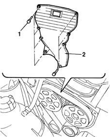
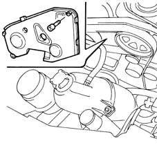
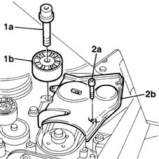

1032D12 timing system protective cover(s) - r + r
- Path
- Procedures > 10 ENGINE UNIT > 1032 TIMING SYSTEM > 1032D timing system protections > 1032D12 timing system protective cover(s) - r + r
- Kind
- repair procedure (removal / refitting; the operation number is the code)
- Applies to
- all engines; all production periods
- Interactive page
- https://sloeber94.github.io/elrnDB-fMltpl/en/#/2891232
Applies to: engines: 1.6 16v; all production periods
 Removing
Removing
 Refitting
Refitting4450B10 Front WHEEL (one) - R.R.
1. Unscrew the cover retaining bolts
2. Remove the protective cover.

Applies to: engines: 1.6 16v; all production periods
Refitting
RemovingPosition the protective cover.
Tighten the protective cover retaining bolts to the specified torque.
 | Fastening | Component | Ø | Value (daNm) |
|---|---|---|---|---|
- | Bolt | BELT PROTECTION COVER | M6 | 0.7 |
Applies to: engines: 1.9 JTD 8V; all production periods
Removing
Refitting4450B10 Front WHEEL (one) - R.R.
- 7055B64 Engine compartment DUST shield in front wheel arch (one), left or right - R.R.
1092G10 single engine belt r r
1092A12 crankshaft pulley - r+r for versions with air conditioner
1016A10 sound-proofing cover - r + r
1008C10 power unit upper reaction link r r
1008C14 engine link bracket - r r
Cut the cam angle sensor retaining collars.
1. Unscrew the retaining bolts.
2. Remove the timing belt upper guard.

Applies to: engines: 1.9 JTD 8V; all production periods
1. Undo bolt (1a) and remove fixed auxiliary drivebelt tensioner (1b).
2. Undo bolts (2a) and remove lower timing belt guard (2b).

Applies to: engines: 1.9 JTD 8V; all production periods
Refitting
RemovingFit the lower timing belt guard.
Fit the auxiliary drivebelt fixed drive pulley and tighten the bolt to torque.
| Fastening | Component | Ø | Value (daNm) |
|---|---|---|---|---|
- | Bolt | FIXED SINGLE SERVICE BELT TENSIONER | M10 | 5 |
Fit the upper timing belt guard.
Use new collars to secure the cam angle sensor lead to the upper timing belt guard.
1008C14 engine link bracket - r r
1008C10 power unit upper reaction link r r
1016A10 sound-proofing cover - r + r
1092A12 crankshaft pulley - r+r for versions with air conditioner
1092G10 single engine belt r r
- 7055B64 Engine compartment DUST shield in front wheel arch (one), left or right - R.R.
Topics linked from this page (6)
- 1008C10 power unit upper reaction link r r
- 1008C14 engine link bracket - r r
- 1016A10 sound-proofing cover - r + r
- 1092A12 crankshaft pulley - r+r for versions with air conditioner
- 1092G10 single engine belt r r
- 4450B10 Front WHEEL (one) - R.R.
Topics that link to this page (29)
- 1016B20 lh cylinder head extension - replace gasket
- 1016B24 rh cylinder head extension - replace gasket
- 1016C11 single cylinder head-r r gasket for versions with air conditioner
- 1020D12 front crank shaft oil seal cover - r + r and replace seals
- 1020D16 front crankshaft oil seal cover - r+r and replace gaskets for versions with airconditioner
- 1020D18 front crank shaft cover oil seal - replace
- 1020D20 front crankshaft cover oil seal - replace for versions with air conditioner
- 1028H11 piston connecting rod set - r r
- 1032B10 toothed timing belt - r + r for timing adjustment or replacement
- 1032B14 toothed timing belt - r + r for timing adjustment or replacement versions with air conditioner
- 1032B16 toothed timing belt - r r with engine removed
- 1032B46 toothed drive pulley - r + r
- 1032B47 toothed drive pulley - r r for versions with air conditioner
- 1032B52 toothed driven pulley (one) - r + r
- 1032B53 driven toothed pulley (one) - r r for versions with air conditioner
- 1032C18 mobile timing system tensioner - r + r for 24 valve engines
- 1032C19 mobile timing belt tensioner - r r for versions with air conditioner
- 1032C31 fixed timing tensioner - r r
- 1032C32 fixed timing system tensioner (one) r + r
- 1036B10 overhead camshaft - r r on vehicle
- 1036G10 camshaft controlling exhaust valves in top head - r + r with top head removed - includes replacement of top head
- 1036G20 camshaft controlling intake valves in top head - r + r with top head removed - includes replacement of top head if necessary
- 1060E10 pressure pump - r r
- 1060E30 pressure pump pulley - r r
- 1060E40 supplementary pressure pump - r r
- 1060G22 cam angle sensor - r r
- 1072B10 inlet manifold - r + r and replace seal
- 1088C12 water pump - r+r for versions with air conditioner
- 4130B32 power steering pump mount - r r